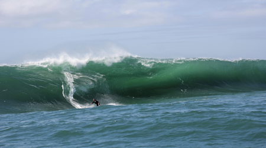
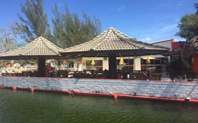

Tesouros Visuais e Naturais
PONTO TURÍSTICO

Laje da Jágua (A Nazaré Brasileira)
Ondas gigantes a 5km da costa. Monitoramento exclusivo para contemplação segura.
Guia de Acesso
ICÔNICO

Chuveirão de Arroio Corrente
Encontro único entre as águas doces das lagoas e o mar salgado.
Ver HoráriosGastronomia Curada
CURADORIA TONAROTA

Restaurante da Orla
Frutos do mar selecionados com fotos reais e menus sempre atualizados.